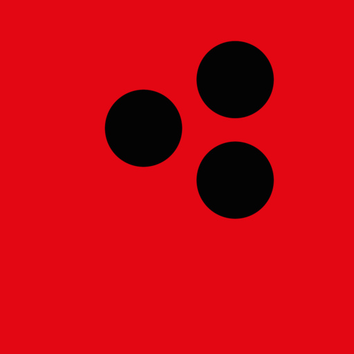

Россия
Сочи
Воровского

PHONDÜPНаши центры на картах
Выберите город и удобный справочник.
Адрес, маршрут и отзывы — в карточке центра.
Ремонт, которому доверяют.
Всё начинается со знакомства.
Воровского
Курортный проспект
Бажова
Свердловский проспект
50 лет Октября
Достоевского
Ангарская
Леваневского
Жамбыла
Попробуйте другой город или улицу.
Можно также убрать фильтр справочника.
Не нашли свой город или хотите уточнить адрес?
Напишите нам перед визитом.
Перед поездкой уточните возможность приёма и время визита. Актуальные часы работы и отзывы смотрите в выбранном справочнике. Адреса в справочниках могут отличаться.